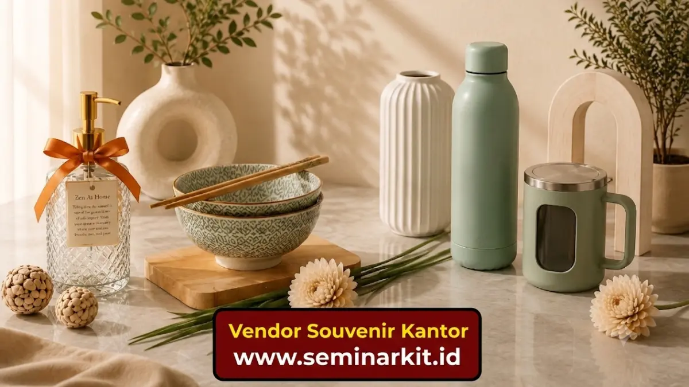

Souvenir kantor adalah barang bercitra perusahaan yang diberikan kepada klien, mitra, atau karyawan untuk memperkuat hubungan bisnis dan citra merek. Pemilihan yang tepat membantu perusahaan tampil profesional sekaligus berkesan positif di mata penerima.
- Souvenir kantor berfungsi sebagai media branding sekaligus tanda apresiasi.
- Pemilihan bergantung pada tujuan acara, anggaran, dan profil penerima.
- Kualitas dan relevansi barang lebih penting daripada sekadar harga murah.
- Souvenir custom dengan logo memberi dampak jangka panjang bagi pengenalan merek.
- Perencanaan anggaran yang matang mencegah pemborosan biaya operasional.
Apa Itu Souvenir Kantor?
Souvenir kantor adalah barang yang dicetak atau diberi identitas perusahaan, biasanya berupa alat tulis, aksesori kerja, atau produk fungsional lain, yang dibagikan pada acara resmi, pertemuan klien, atau perayaan internal. Barang ini umumnya digunakan pada momen seperti peluncuran produk, pameran dagang, ulang tahun perusahaan, atau kunjungan klien penting. Souvenir kantor berbeda dari hadiah pribadi karena tujuannya bersifat institusional, yaitu memperkuat identitas dan hubungan bisnis, bukan sekadar hadiah personal. Perusahaan dari berbagai skala, mulai dari usaha rintisan hingga korporasi besar, umumnya menggunakan souvenir kantor sebagai bagian dari strategi komunikasi dan relasi bisnis mereka secara berkelanjutan.
Mengapa Souvenir Kantor Penting bagi Perusahaan?
Souvenir kantor penting karena berfungsi sebagai alat branding yang dapat diingat penerima dalam jangka waktu lebih lama dibandingkan materi promosi digital yang mudah terlupakan. Barang fisik yang digunakan sehari-hari, seperti pulpen, tumbler, atau notebook, secara tidak langsung membuat logo dan nama perusahaan terlihat berulang kali oleh penerima maupun orang di sekitarnya. Hal ini menciptakan pengenalan merek yang bersifat pasif namun konsisten. Selain aspek branding, souvenir kantor juga menunjukkan apresiasi perusahaan terhadap klien atau karyawan. Pemberian yang tepat waktu dan relevan dapat memperkuat loyalitas serta membangun kesan profesional yang positif terhadap perusahaan.
Bagaimana Cara Kerja Souvenir Kantor dalam Strategi Bisnis?
Souvenir kantor bekerja sebagai media komunikasi non-verbal yang menyampaikan nilai dan identitas perusahaan melalui benda fisik yang dipegang atau digunakan penerima. Dalam praktiknya, perusahaan biasanya menetapkan tujuan pemberian souvenir terlebih dahulu, misalnya untuk memperkenalkan produk baru, mempertahankan relasi klien lama, atau meningkatkan semangat kerja tim internal. Tujuan ini kemudian menentukan jenis barang, desain, dan cara pendistribusiannya. Setelah tujuan ditentukan, tim procurement atau marketing biasanya bekerja sama dengan penyedia percetakan atau produsen merchandise untuk memastikan desain logo, warna, dan pesan perusahaan tercetak secara rapi dan konsisten pada setiap barang.
Apa Saja Faktor yang Perlu Dipertimbangkan Sebelum Membeli Souvenir Kantor?
Faktor utama yang perlu dipertimbangkan meliputi tujuan pemberian, profil penerima, anggaran yang tersedia, serta daya tahan dan fungsi barang dalam penggunaan sehari-hari. Beberapa faktor penting lainnya:
- Relevansi dengan penerima. Souvenir untuk klien korporat biasanya berbeda gaya dengan souvenir untuk karyawan internal.
- Kualitas bahan. Barang berkualitas rendah dapat menurunkan citra perusahaan meski tampilannya menarik.
- Kapasitas produksi vendor. Pastikan vendor mampu memenuhi jumlah pesanan sesuai tenggat waktu acara.
- Kesesuaian anggaran. Anggaran perlu disesuaikan dengan skala acara dan jumlah penerima.
- Kemudahan branding. Pilih barang dengan area cetak logo yang cukup luas dan jelas terlihat.

Bagaimana Cara Memilih Jenis Souvenir Kantor yang Tepat?
Cara memilih jenis souvenir kantor yang tepat adalah dengan menyesuaikan fungsi barang terhadap kebutuhan penerima serta suasana acara yang diselenggarakan perusahaan. Untuk acara formal seperti pertemuan bisnis atau seminar, souvenir berupa alat tulis premium, buku catatan, atau tumbler stainless umumnya dianggap sesuai karena kesan profesionalnya. Sementara untuk acara internal seperti gathering karyawan, barang yang lebih santai seperti kaos, tas kanvas, atau merchandise bertema perusahaan dapat menjadi pilihan yang relevan.
Perusahaan juga dapat mempertimbangkan tren penggunaan barang ramah lingkungan, seperti botol minum reusable atau tas belanja kain, yang secara umum semakin diminati sebagai bentuk kepedulian terhadap lingkungan sekaligus nilai tambah citra merek. Berdasarkan pengamatan umum pada praktik corporate gifting di Indonesia, kombinasi antara fungsi harian dan desain minimalis cenderung lebih disukai penerima dibandingkan barang yang terlalu ramai secara visual, meski preferensi tetap dapat bervariasi tergantung industri dan segmen pasar perusahaan.
Berapa Anggaran yang Ideal untuk Souvenir Kantor?
Anggaran ideal untuk souvenir kantor umumnya disesuaikan dengan skala acara, jumlah penerima, dan tujuan strategis pemberian barang tersebut. Perusahaan kecil dengan acara internal terbatas biasanya mengalokasikan anggaran per unit yang lebih rendah dibandingkan perusahaan besar yang memberikan souvenir kepada klien korporat dalam acara formal berskala besar. Secara umum, semakin tinggi nilai strategis penerima, semakin besar pula anggaran yang biasa dialokasikan per unit barang.
Penting untuk menghitung total anggaran berdasarkan jumlah penerima terlebih dahulu, kemudian menyesuaikan pilihan jenis barang dengan sisa anggaran yang tersedia, bukan sebaliknya, agar kualitas tetap terjaga tanpa melebihi kapasitas keuangan perusahaan.
Apa Saja Kesalahan Umum dalam Memilih Souvenir Kantor?
Kesalahan umum dalam memilih souvenir kantor meliputi mengutamakan harga murah tanpa memperhatikan kualitas, memilih barang yang tidak relevan dengan penerima, dan mengabaikan waktu produksi yang dibutuhkan vendor. Beberapa kesalahan yang sering terjadi:
- Memesan souvenir terlalu mendekati tanggal acara sehingga kualitas cetak logo tergesa-gesa.
- Memilih barang seragam untuk semua jenis penerima tanpa mempertimbangkan konteks acara.
- Mengabaikan uji sampel produk sebelum produksi massal dilakukan.
- Tidak memperhitungkan biaya tambahan seperti pengemasan dan pengiriman.
- Terlalu fokus pada desain tanpa memastikan fungsi barang benar-benar bermanfaat bagi penerima.
Menghindari kesalahan-kesalahan tersebut dapat membantu perusahaan memaksimalkan manfaat souvenir kantor sekaligus menjaga efisiensi anggaran secara keseluruhan.
Tips Praktis Memilih Vendor Souvenir Kantor yang Tepat
Tips utama dalam memilih vendor souvenir kantor adalah memeriksa portofolio produksi sebelumnya, meminta sampel fisik, dan memastikan kejelasan tenggat waktu pengerjaan sebelum melakukan pemesanan dalam jumlah besar. Perusahaan disarankan untuk berkomunikasi secara rinci mengenai spesifikasi bahan, teknik cetak logo, dan estimasi waktu produksi agar tidak terjadi kesalahpahaman di kemudian hari. Vendor yang transparan mengenai proses produksi umumnya lebih dapat diandalkan untuk pemesanan berskala besar maupun berulang.
Souvenir kantor merupakan investasi branding yang efektif apabila direncanakan dengan mempertimbangkan tujuan acara, profil penerima, anggaran, dan kualitas vendor secara menyeluruh. Perusahaan yang konsisten memilih souvenir relevan dan berkualitas cenderung membangun citra merek yang lebih kuat di mata klien maupun karyawan dalam jangka panjang. Untuk memahami lebih lanjut, simak juga pembahasan mengenai jenis-jenis souvenir kantor yang populer, cara memilih souvenir kantor sesuai budget, dan manfaat souvenir kantor bagi branding perusahaan.

Banner promosi: klik gambar untuk langsung terhubung ke WhatsApp tim sales.